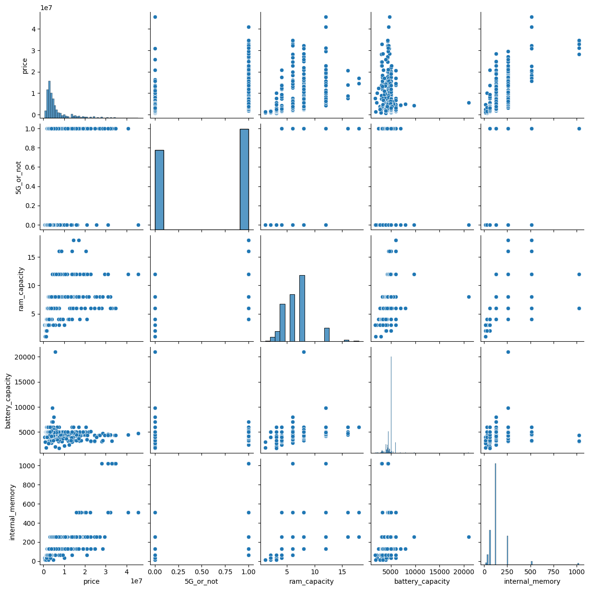
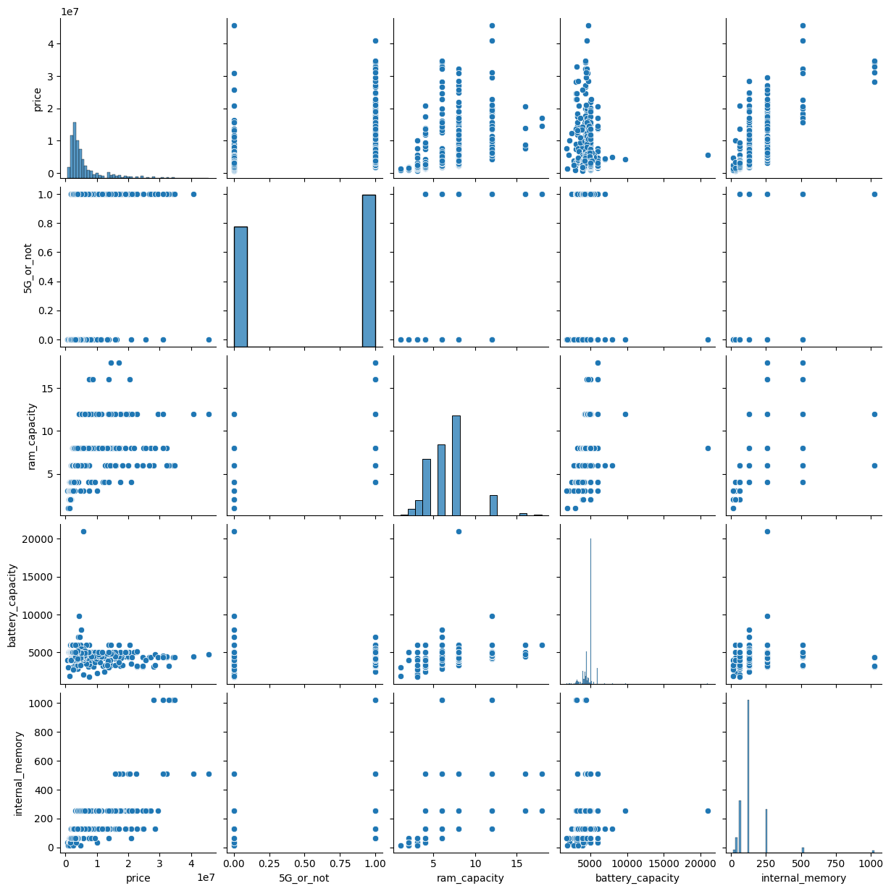

.png)
Implementation of the K-Means clustering algorithm for categorizing smartphones.
In this study, K-Means is applied to analyze the relationship between technical specifications and smartphone prices, aiming to identify patterns and classify smartphones into market segments. The dataset includes key attributes such as battery capacity, processor speed, user ratings, RAM, and internal storage. Before clustering, data preprocessing is performed, including normalization to standardize attribute scales and irrelevant data removal to enhance model accuracy. The processed data is then categorized into three main clusters, representing high-end, mid-range, and low-end market segments.
The clustering results are further analyzed to explore the correlation between smartphone specifications and price categories, with visualizations such as scatter plots and bar charts used for better interpretation. This approach provides valuable insights into consumer preferences and key market characteristics, helping stakeholders understand pricing trends and technological advancements in the smartphone industry.
Features
Data Preprocessing
Cleans and normalizes raw data for clustering analysis.
K-Means Clustering
Groups smartphone data into meaningful clusters.
Data Visualization
Generates scatter plots and bar charts for cluster insights.
Cluster Evaluation
Analyzes silhouette scores to assess clustering accuracy.
Dataset Upload
Enables users to upload smartphone specifications for analysis.
Smartphone Recommendations
Suggests suitable smartphones based on user preferences.
Technologies Used
Gallery
.png) 
